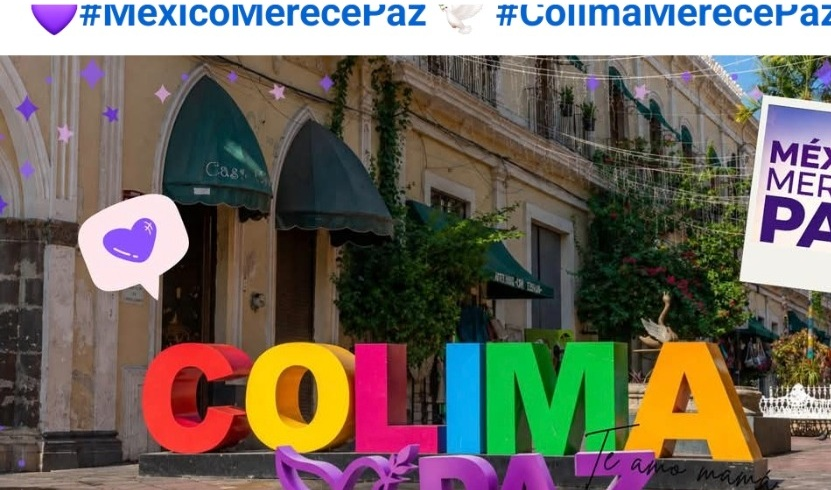
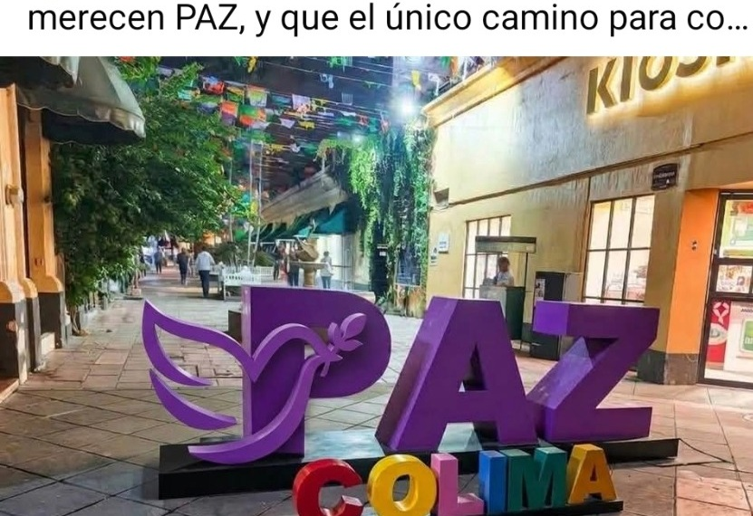
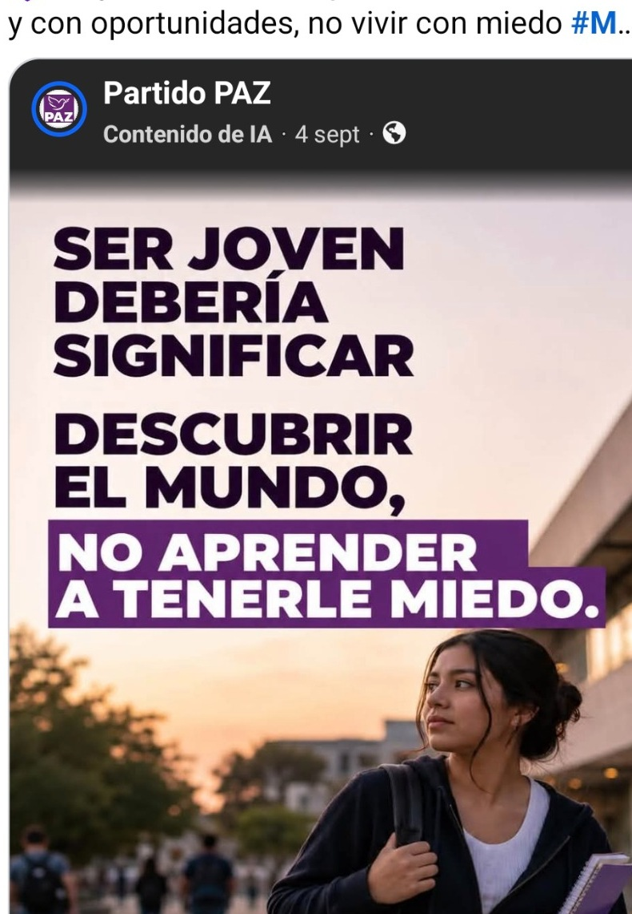
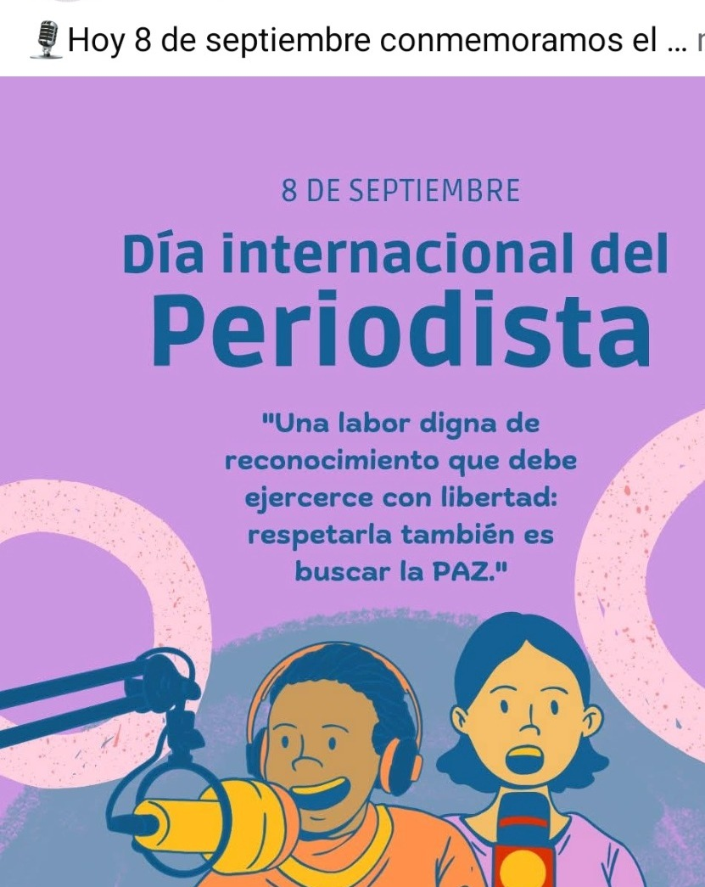
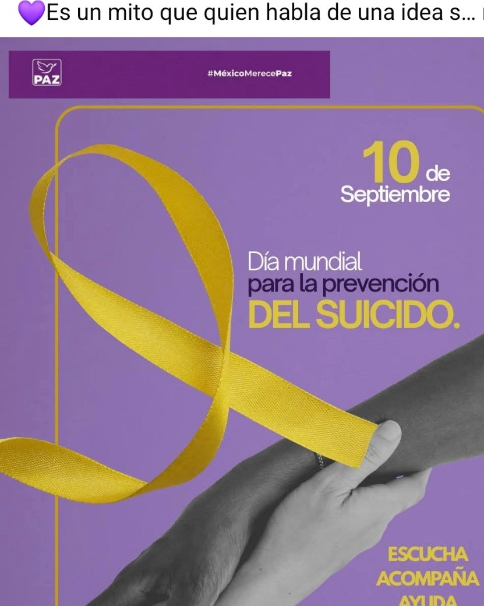

Seguridad
Que cada persona pueda salir, estudiar, trabajar y volver a casa con tranquilidad.
Esta propuesta toma el morado institucional de PAZ y lo mezcla con la identidad colorida que ya aparece en sus publicaciones de Colima: rosa, amarillo, azul, verde y naranja.
El resultado es una web más viva, ciudadana y territorial, pensada para comunicar seguridad, oportunidades, libertad, juventud y participación.

Una composición más alegre para que no se sienta como copia de Tamaulipas, Veracruz, Yucatán o Aguascalientes.
Las publicaciones compartidas hablan de vivir sin miedo, poder estudiar, trabajar, emprender, caminar con tranquilidad y participar en comunidad.
Que cada persona pueda salir, estudiar, trabajar y volver a casa con tranquilidad.
Juventud con futuro, empleo digno y posibilidades reales de salir adelante.
Donde todas las voces cuentan y la ciudadanía pueda involucrarse de forma activa.
Vivir sin miedo también significa ejercer derechos, expresarse y desarrollarse.
La versión completa puede separar noticias, actividades y representantes por municipio manteniendo una sola identidad estatal.

Una estructura pequeña permite hacer un portal muy claro y fácil de navegar, con información local y estatal sin saturar el diseño.

Esta línea de comunicación se presta perfecto para una sección propia dentro de la web dedicada a estudiantes, empleo, movilidad, seguridad y oportunidades para jóvenes.
PAZ Colima ya comparte contenido sobre instituciones, participación política, prevención y libertad de expresión. La web puede convertir esas publicaciones en notas permanentes y ordenadas.
Espacio para comunicados, posicionamientos y presencia en procesos públicos y electorales.

Una sección para fechas conmemorativas, derechos, mensajes sociales y reconocimiento a profesiones clave para la democracia.
Entre las publicaciones compartidas aparece también el Día Mundial para la Prevención del Suicidio. En una web institucional, este tipo de temas puede tener tratamiento responsable, permanente y con enlaces a recursos de ayuda.

Esta demo está preparada como una web real para GitHub Pages. Después puede crecer con noticias administrables, directorio de representantes, formularios, agenda, documentos, enlaces oficiales y contenido por municipio.